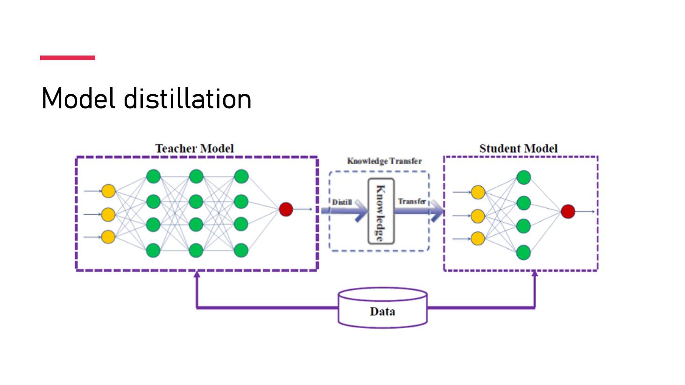

DIAPOSITIVES 46 à 48
Comment on fait aussi bien pour cent fois moins cher — et sur quelle machine.

Le MoE est la clef économique : à taille de modèle comparable, on ne paie le calcul que sur un vingtième du réseau. C’est un gain d’architecture, pas de matériel — exactement ce que la fiche 11 annonçait.
| Technique | Ce que c’est, et l’image donnée |
|---|---|
| Optimisation en assembleur PTX plutôt que CUDA |
Programmation ultra-bas niveau permettant de contrôler directement le matériel. PTX offre un contrôle maximal du processeur graphique, là où CUDA est plus abstrait. Comme donner des instructions détaillées à un robot au lieu de lui laisser interpréter des ordres généraux. |
| Contraintes de bande passante mémoire | Limitation de la vitesse d’échange des données dans le système. Comme essayer de remplir des bouteilles avec un robinet trop étroit — DeepSeek a trouvé le moyen d’accélérer le flux. |
Le perroquet stochastique est une métaphore qui illustre deux limites des grands modèles de langue : premièrement, ils sont bornés par leurs données d’entraînement et ne font qu’en répéter stochastiquement le contenu ; deuxièmement, ils produisent un énoncé plausible, comme le ferait un perroquet, sans en comprendre le sens.
Le Chain-of-Thought est présenté comme ce qui pourrait y mettre fin : une couche d’apprentissage symbolique, avec des règles, greffée sur un modèle statistique. L’orateur le démontre par un exemple qui tient en trois lignes :
Question : combien y a-t-il de « 5 » dans 100 ?
Réponse d’un modèle statistique — la réponse la plus probable à cette question. Elle peut se trouver juste, par chance.
Réponse d’un système symbolique — un raisonnement sur un problème à résoudre : concept de nombre, concept d’opération arithmétique, puis application de l’algorithme de la division.
L’exemple est imparable pour un public non technique, et il boucle la distinction posée en fiche 5 : la seconde réponse est juste parce qu’elle est juste, la première l’est éventuellement par accident.
Matériel, programmation, architecture — les trois étages sur lesquels tout repose :
| Étage | Contenu |
|---|---|
| Processeurs graphiques (GPU) |
Calcul parallèle. Une NVIDIA GeForce RTX 4090 grand public embarque 16 384 cœurs CUDA. |
| Routines BLAS | Basic Linear Algebra Subprograms : algèbre linéaire — addition de vecteurs, multiplication de matrices — écrites en C ou en Fortran. |
| Supercalculateurs | 67 téraflops pour une NVIDIA H100. Un téraflop = 1012 opérations en virgule flottante par seconde. |
| Data centers | 100 000 serveurs dans un centre de taille moyenne. |
| Clusters de data centers | L’échelle de Stargate — voir fiche 2. |
La diapositive se referme sur une expérience de pensée : the nightmare of the paperclip factory — une IA à qui l’on assigne de maximiser la production de trombones, et qui y convertit méthodiquement toutes les ressources disponibles, l’humanité comprise. Elle est due à Bostrom, et elle n’illustre pas la malveillance mais l’indifférence : le problème n’est pas qu’une machine nous veuille du mal, c’est qu’un objectif mal spécifié suffit. C’est le problème de l’alignement de la fiche 7, ramené à un objet de bureau.